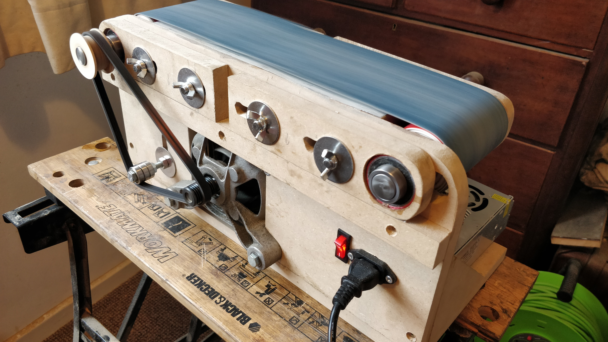
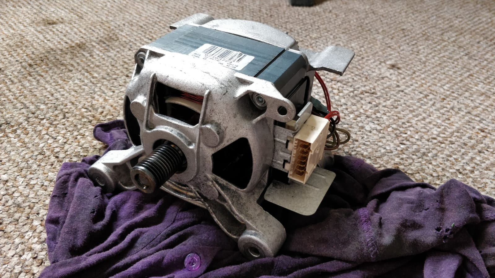
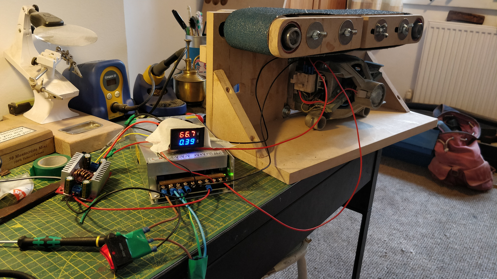
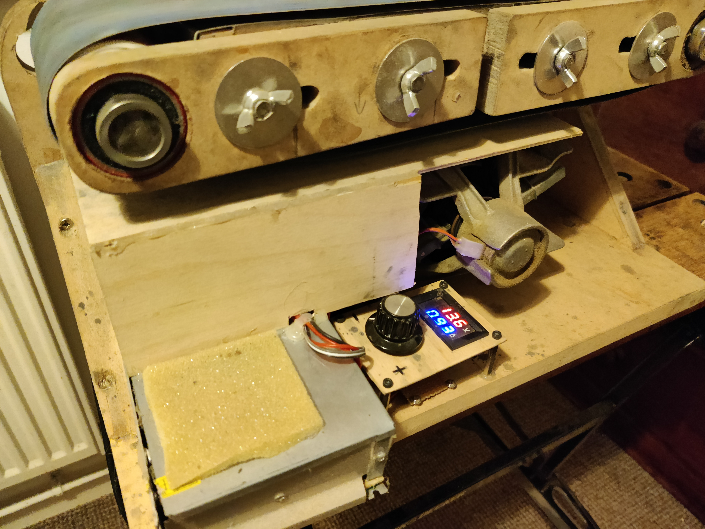

Benchtop Belt Grinder
Project: September 2020
Writeup: March 2021
Yikes.
One fateful morning I noticed that someone had left a washing machine next to the bins in my garden. RESULT.
I've been a long-time fan of The Post Apocalyptic Inventor who has an entire playlist of videos detailing how washing machine parts, and specifically motors can be repurposed. So I'd had my eye out for one to play with for a while!
Side note, this guy is one of my favourite creators and all of his stuff is gold: extremely informative and entertaining. I admire his philosophy. Very few people would take the time to not only repair old tools and equipment, but also document the process in order to educate others and demystify electromechanical devices. I only wish there were such amazing scrapyards in the UK!*
*If there are, I can't find them. Maybe you have to know a guy...
So out I pop, spanners in hand. I wave to the lady at Number 85 and proceed to extract this lump of a motor from the washing machine like an oily pearl. It's dusty, but otherwise pristine. There's really not a lot going on in these big motors, so it's more often than not the electronics or some other more fragile component that's caused the whole washing machine to be thrown away. Sad for the planet, but at least recycling a part of it is something?
Beauty. (Don't worry, those are fully sterilised workshop-pants)
I left it inside to dry out for a couple of days before giving it a test. The pinout is easy to work out by measuring the resistances across pairs of wires (see the playlist above).
It's a universal motor which runs on AC in the machine, but can also work with DC to take the danger down from a 10 to like a soft 6. So you use one DC supply for the coil and another for the rotor. She spins up beautifully! You can play with the voltages you apply to the coil and rotor to get into the torque / speed range you need. It's got plenty of grunt for a benchtop tool of some kind, so I start thinking! Toyed with a wood lathe (another day...) but eventually decided that I'd get more use out of a grinder. The nice ridged pulley on the shaft is also convenient for this: one less thing I have to faff with.
I wish I could say I meticulously planned every aspect of my design before making parts one by one, referencing my plans. But that's just not how I roll (I have a problem, help me...). I basically just mentally simulate various arrangements of parts of the course of many days until I can see the whole thing working then dive in. It's less like engineering and more like art? Maybe. My final mental design involves a system of sliding rails clamped to a fixed platten by some chunky thread. I'm both limited by the engineering and construction techniques my amaterish brain knows about as well as what I'm physically able to manufacture in my space.
The only parts I bought were a few bearings, some 20mm steel rod for the roller shafts and a chunky 12V power supply. The main construction was 18mm MDF which I had in the pile. The hardest part was the rollers! How do you make a nicely concentric cylinder of arbitrary diameter without a lathe? (Or 3D printer, CNC, band-saw etc. etc. etc.) My first bright idea was to cut a series of MDF blanks out using a holesaw and stack them up. Fought with this for a while before abandoning the idea: it's impossible to make everything concentric with the central bore, especially without a drill press. What I eventually landed on was a highly-advanced carbohydrate-polymer composite I fabricated by tightly rolling up thick backing paper with superglue. Not a joke. That's literally how the rollers were made. They've been pretty solid so far! Which is lucky, because they're never coming off those shafts...
Wiring begins.
This is the pretty much finished superstucture around which I'm fitting the electronics. Motor is a lovely tight fit and nicely square with the drive-side shaft. Here the coil is getting 12V directly from the PSU, and the rotor is getting supplied by that boost converter whose knob I'm twiddling (meter display is this boosted rotor voltage / current). The 12V coil voltage was picked to give enough torque with a decent range of speeds. The motor could take a LOT more power, but this is sufficient for this device made from wood. Added a 120mm fan and some ducting to at least waft some air over the thing.
Here you can also see the slots in which those two outer bearing-holders ride to allow me to tension the belts. In a manner of speaking.
The roller-side pulley (see first photo) is a holesaw blank with some little walls glued on. I started off with a cheap Flymo belt I found which happened to have the right profile (J Section Poly V) but later upgraded to a much fatter one for max torque (SimplyBearings has everything).
Well used. Yes, the power supply hangs over the edge. I did measure it but forgot to account for the wires poking out of the business-end of the supply. Oh well. The fan is in between the supply and the motor, sucking fresh air through the duct and out the back. The foam over the supply intake is just because I didn't have any mesh. It's fine (probably)
All buttoned-up it works fine. Plenty of juice, but its fabricobbled nature results in a less than optimal user experience. Tracking is a pain to adjust, and it's awkward to have anything run off the sides of the platten because the bearing runners overhang. Found myself mostly using the rollers themselves for most work. But it played a major role in the construction of all the knives I made in late 2020, both on steel and in handle construction. It was a fun project, I look forward to making another one day when I can weld!